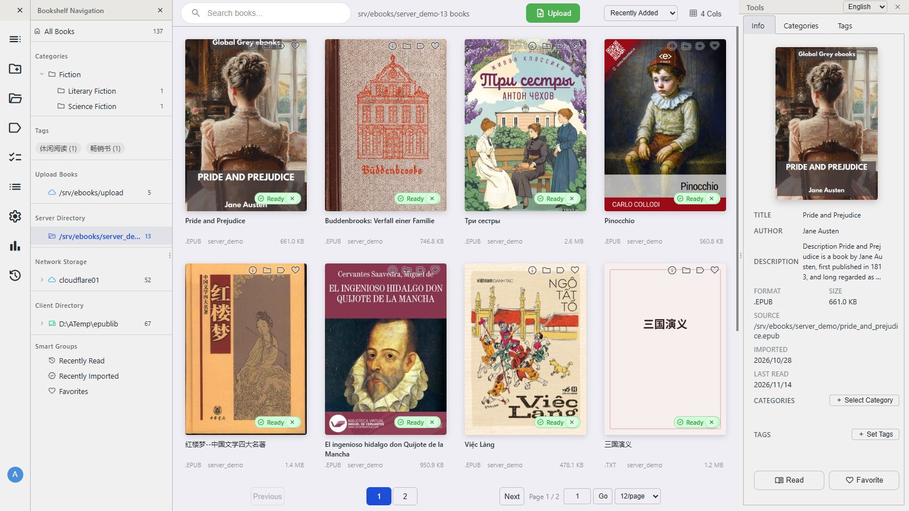

Shelf & Views
The Shelf can change how books are shown, how they are sorted, which ones are listed — and it can act on several books at once.

Grid and list
- Grid — covers only, good for browsing.
- List — one book per row, with more details at once; good for organizing.
The view button in the left toolbar switches between them; the button shows the current view.
Sorting
The Sort by dropdown in the top bar offers: Recently Added, Recently Updated, Title A→Z, Title Z→A, By Author, File Size and Recently Read.
Search and paging
- Type a title or author in the search box and press Enter.
- The pager at the bottom switches pages. How many books fit on a page follows your Shelf settings.
Batch actions
Click Batch in the left toolbar to select several books, then remove them, add them to a category, or add tags.
Other entries
- My Stats — your reading statistics.
- History — books you read recently.
- Settings — options for the Shelf.
- The collapse and expand control on the contents tree gives the grid more room.